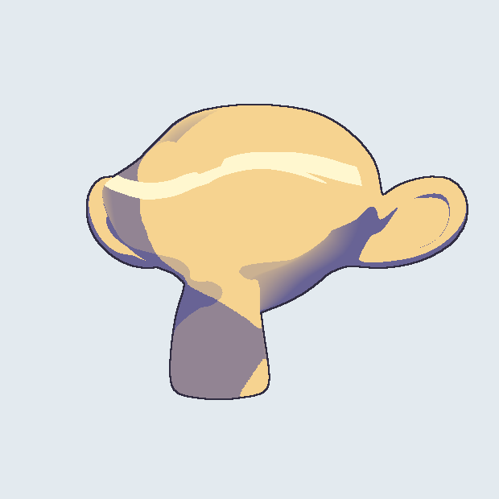
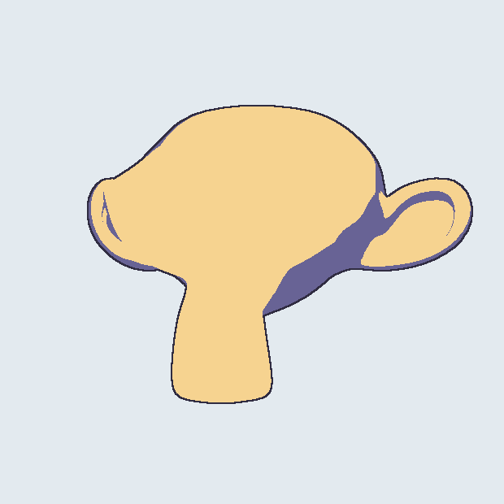
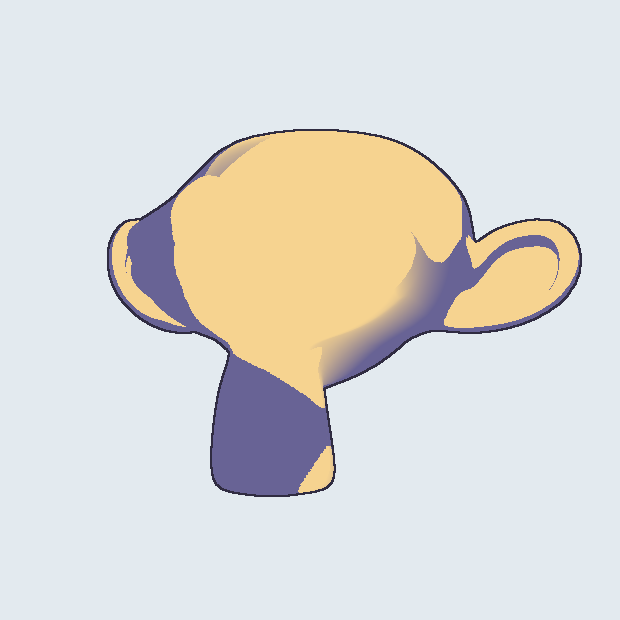
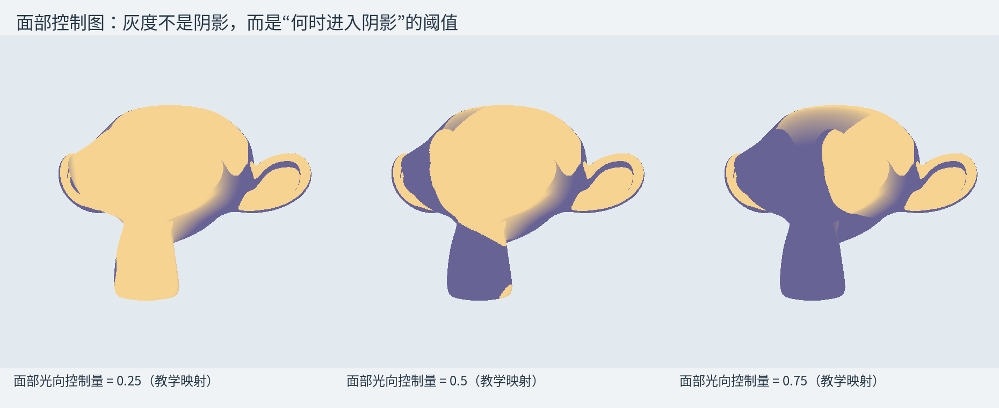
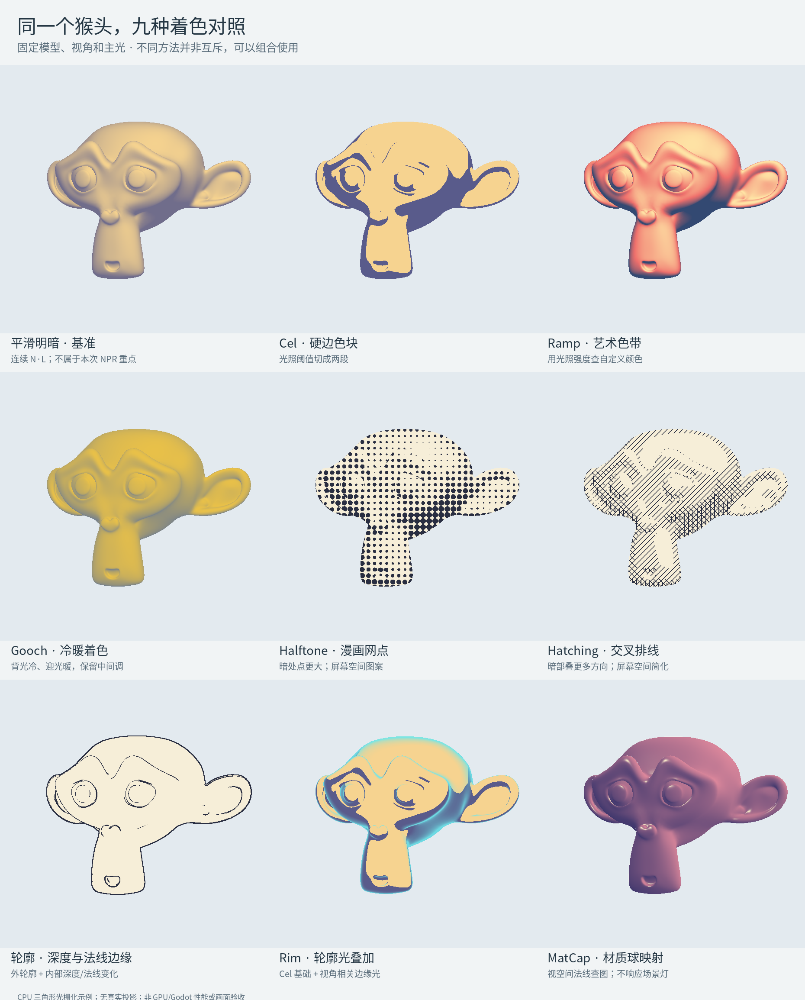

普通二分
统一阈值与原始法线，作为其他案例的对照。
Rendering / Art Direction
从普通二分到二次元角色的艺术化控制。固定同一个 Suzanne 模型，让差异来自着色方式，而不是换一个更漂亮的模型。

法线、局部阈值、面部控制与高光叠加。用于解释控制手段，不是最终美术质量。
统一阈值与原始法线，作为其他案例的对照。

着色时混合法线，使面部明暗更整体；未真正修改模型顶点法线。夸张参数可能压平眼鼻结构。
不同区域使用不同阈值，让明暗交界服务于美术造型。

预绘灰度图决定每处何时变暗；本例采用平面投影，不是真正的 SDF，也不是固定黑白遮罩。
单独设计高光形状；不是 Unity Angel Ring 或物理头发着色。猴头没有真实头发，无法验证发型效果。
法线、局部阈值、面部控制与高光叠加。用于解释控制手段，不是最终美术质量。
固定阴影遮罩类似手绘结构阴影：将实时亮区遮罩与它相乘，黑色处持续压暗。
阈值图储存“何时变暗”。随着控制值变化，不同位置依次跨过阈值，阴影边界随之移动。
本例未计算距离场，也未实现头部局部光向同步、左右镜像及角色 UV，不能称为完整面部 SDF 着色器。

从明暗分层、暖冷配色，到印刷网点与线稿。不同算法服务于不同画风，不能简单按“更高级”排序。

Cel 用阈值切分光照；Ramp 用查找表定义色阶；Gooch 用暖冷色区分受光与背光。
半色调、排线用图案表达明暗；边缘提取与描边强调结构。屏幕空间描边可能需要深度、法线及额外全屏通道。
Rim 强调轮廓；MatCap 根据视空间法线采样预制外观。它们不等于完整照明系统，复杂灯光与投影需另行设计。
关注可控阈值、编辑法线、角色光向和美术主导的阴影。本页借鉴控制思路，不复现完整游戏管线。
GDC 2015 演讲资料 ↗系统查看阴影层次、描边、轮廓光与高光。官方 Angel Ring 依赖相机与 UV2，本页的条带不是其实现。
UTS 手册 ↗ · Angel Ring ↗社区代码帮助理解阈值图与角色着色，但不代表《原神》等游戏的官方源码或已核实生产方案。
URP_Toon ↗ · URPSimpleGenshinShaders ↗包含 Python 渲染源码、模型数据、阈值图、对照图和原始教学限制说明。